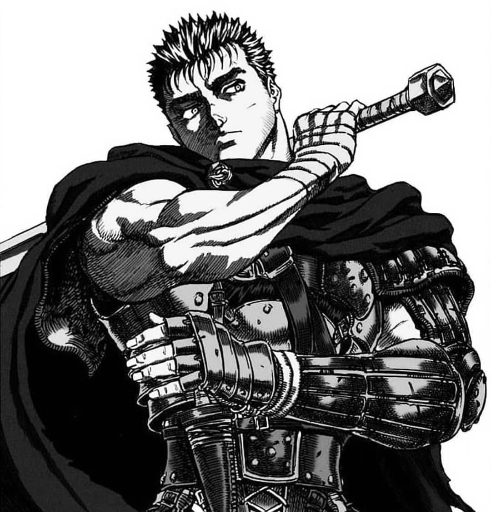
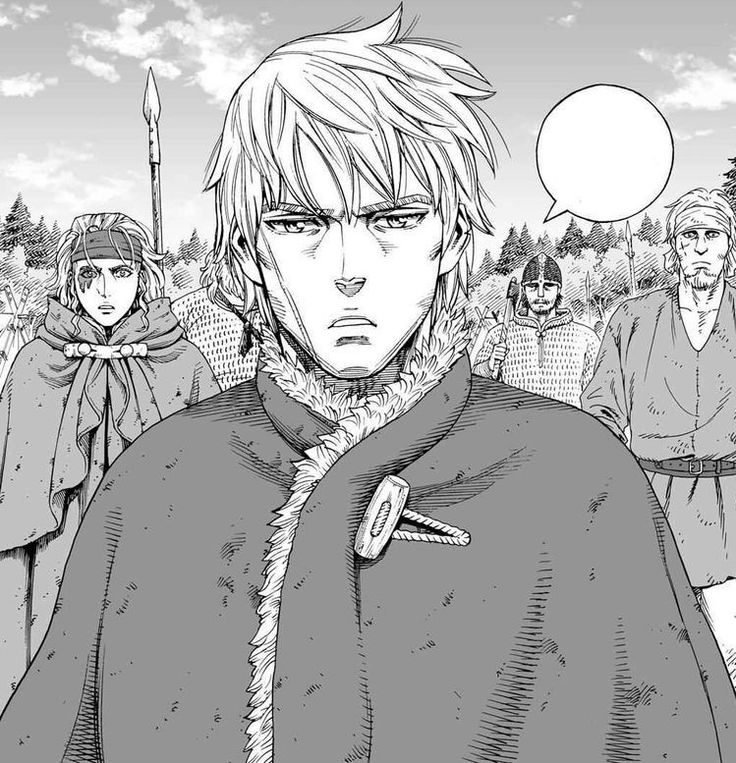
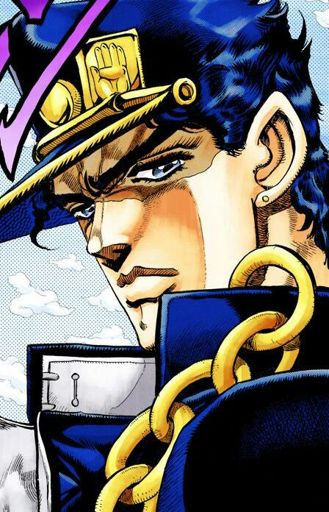

Dentro del Castillo Azabache, yace el cuerpo del rey loco, quien hace siglos fue conocido por su gran valor; ahora solamente queda una sombra de lo que antes fue. Su armadura parece estar oxidada, mas sólo son las hebras del destino haciéndose pasar por corrupción. Pocos son capaces de acercarse, pues el terror de las voces abisales retumba en los tímpanos de aquellos que osan posarse en sus recámaras de piedra entristecida por el tiempo.
Así, parece ya no existir rastro de la cara perdida del Vacío. Un melancólico guerrero alguna vez entró, solamente para adquirir la fuerza inhumana con el fin de proteger a sus camaradas. Los últimos retazos de su previa consciencia quedaron ahí sumergidos, sin mayor sentimiento, como un árbol ya seco tras un deshidratante ser que todo lo absorbe.
Películas, series, libros y videojuegos favoritos:
| Personaje | Imagen | Descripción |
|---|---|---|
| Guts |  | Cuando leí Berserk, no entendía completamente por qué decían que era tan bueno hasta que conocí al personaje principal; realmente, me parece que es el mejor protagonista, al menos a nivel narrativo que me he encontrado. Al principio lo conoces por ser un desgraciado cínico cuyo único interés es asesinar demonios de la manera más grotesca y dolorosa posible. Después, te presentan su infancia, adolescencia y adultez junto a la Banda del Halcón, donde su amigo lo traiciona terriblemente y se transforma en un demonio hasta el punto de marcarlo con un odio tremendo contra toda su estirpe. Posteriormente, se recupera de todo ello (más o menos) y empieza a amar de nuevo. |
| Thorfinn Karlsefni |  | Thorfinn es el desarrollo de personaje en carne y hueso; al principio, es un niño que apenas entiende al mundo y quiere ir a pelear guerras porque le parece honorable y divertido; sin embargo, cuando su padre muere a manos del mercenario Askeladd, con apenas 6 años, jura venganza contra aquél que lo asesina. Como sea, después pasa 10 años en el campo de batalla para lograrlo, solamente para que le arrebaten la venganza, dejá en un estado deplorable y vacío. En los siguientes arcos narrativos, se le ve crecer desde literalemente desde que es un esclavo, hasta que funda el primer asentamiento vikingo en América, al cual llama "Vinlandia". Lo más interesante de Thorfinn es que empieza como un guerrero consumido por el odio y termina como un ser humano pacifista, recordando las enseñanzas de su padre: "Nadie tiene enemigos" y "Un verdadero guerrero no necesita una espada". |
| Jotaro Kujo |  | En este caso, simplemente admiro el estoicismo y capacidad de permanecer calmado en situaciones críticas de este personaje; además, es tremendamente creativo con las decisiones que va tomando en el transcurso de sus batallas. Es simplemente bastante admirable y humano, sobre todo cuando se profundiza en sus carencias y habilidades en la Parte 6 de Jojo's Bizarre Adventure, donde literalmente sacrifica al mundo por salvar a su hija. |